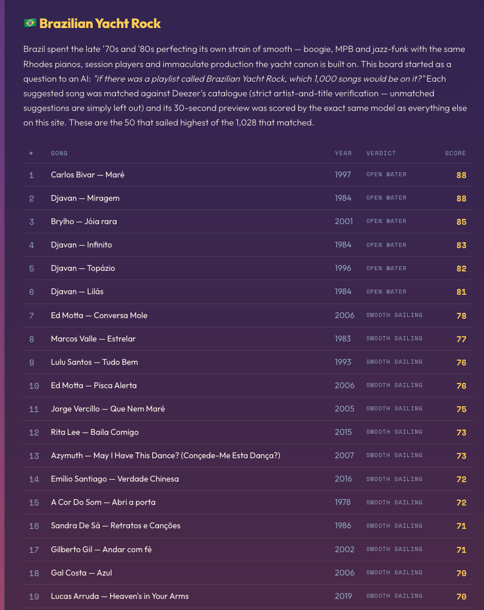
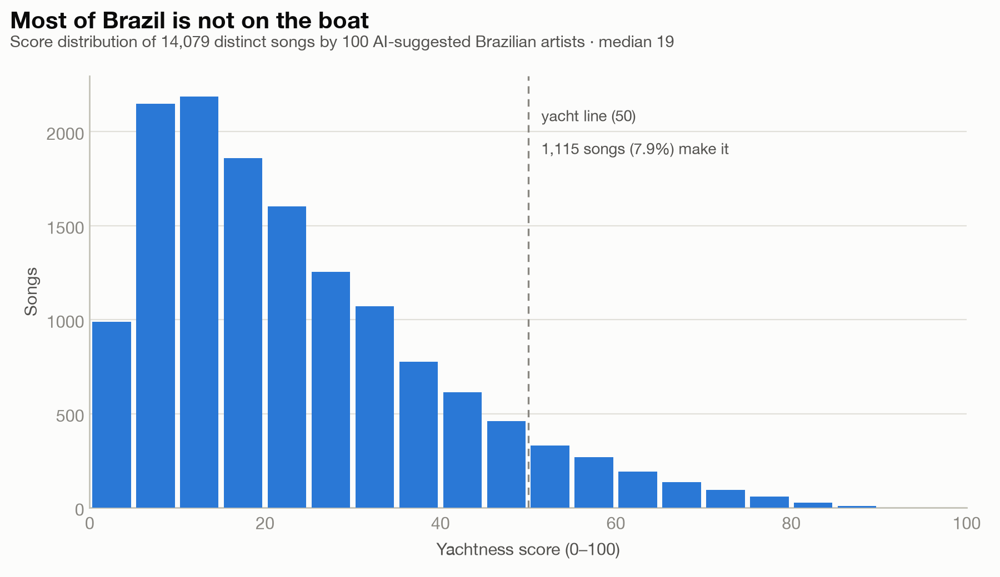
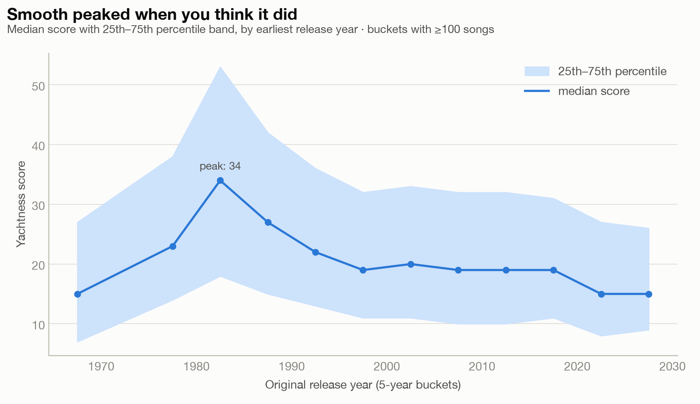
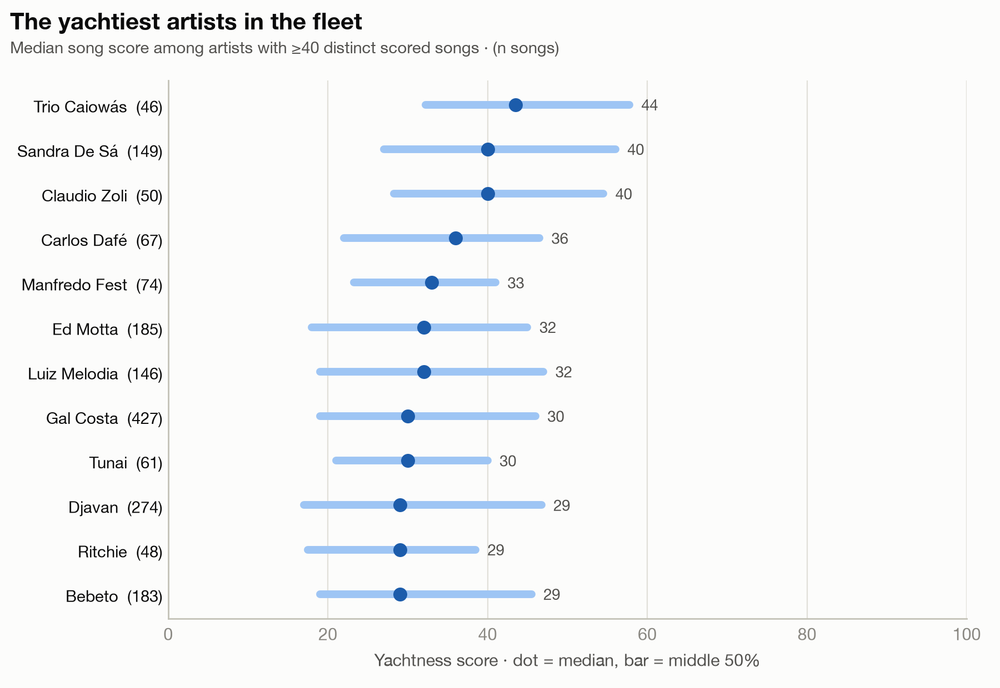
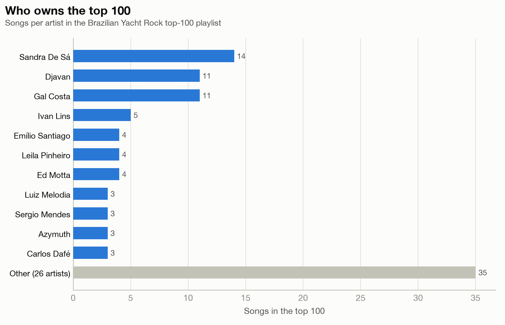

The Brazilian Yacht Rock Leaderboard
Brazil spent the late '70s and '80s perfecting its own kind of smooth. Boogie, MPB, and jazz-funk records built on the same Rhodes pianos, session players, and immaculate production the yacht rock canon is made of. As a Brazilian who built a yacht rock detector, I had to know: how yachty is Brazilian music, really? So I scored 14,079 songs to find out.
The experiment
I started by asking a large language model a simple question: which 100 Brazilian artists were most likely to have made something that sounds like yacht rock? Then, instead of trusting anyone's picks about individual songs, I pulled everything those artists have on Deezer. Full catalogues, deep cuts, live albums, remixes, everything. That came to 21,418 scored recordings, with only 13 tracks skipped for having no preview. The recordings collapse to 14,079 distinct songs by matching on normalized artist and title, ignoring case and punctuation and stripping bracketed suffixes like "(Remastered)" or "(Ao Vivo)". Each song keeps its highest-scoring recording, and its year is the oldest release year seen across every copy of it in the pool, so a 1984 song reissued in 2014 counts as 1984.
One honest blind spot in that dating rule: when the only copies of a song in the pool are reissues, the song wears the reissue year. That can only push dates later, never earlier, which will matter when we get to the era analysis.
Every preview then went through the exact same model that powers Yachtness Score. No special treatment for being Brazilian. The top 50 now live on the site's leaderboard, and the top 100 are in a Spotify playlist at the end of this post.
The division of labor matters here: the language model only chose whose catalogues to search. Every judgment about every individual song came from the audio model listening to it.

Most of Brazil is not on the boat
Now the sobering part. This pool was picked to be as yachty as possible, 100 artists nominated precisely because they might have made something smooth. The model still rejected almost all of it. The median score is 19. Only 1,115 songs out of 14,079, about 7.9%, cross the yacht line at 50, and a mere 189 songs, 1.3%, reach 70 or higher.

Smooth peaked exactly when you think it did
The model never sees a release date. It only hears audio. And yet, when you group songs by year, it independently rediscovers the golden age: scores climb through the late '70s, peak in the 1980 to 1984 bucket at a median of 34, nearly double the all-time median, and slide back down through the '90s. The window when Brazilian studios went all in on boogie and polished MPB production is exactly the window the model finds smoothest.
Remember the reissue caveat from the methodology: mis-dated songs can only leave the early '80s, never sneak into them. So if anything, the real peak is taller than the chart shows.
Two smaller things I checked along the way. First, the median never returns to its '80s peak, but it also never collapses; from the 2000s on it sits around 19, kept afloat by revivalists like Ed Motta and by veterans who never stopped recording that way. Second, song length has nothing to do with it: the correlation between duration and score is 0.03, which is to say zero. Smoothness is not length.

The consistency crown goes somewhere unexpected
Ranking artists by their median song score, among artists with at least 40 scored songs, produces a genuine surprise at the top: Trio Caiowás, a vintage vocal-harmony group, with a median of 44 across 46 songs. Sandra De Sá and Claudio Zoli follow at 40, and Carlos Dafé at 36.
Djavan, the artist who owns the top of the song list, has a median of just 29. That is the interesting part. He has the highest peaks in the pool and a deep, varied catalogue of 274 songs that spans way beyond boogie. Peak yachtiness and consistent yachtiness are different crowns, and they belong to different heads. Sandra De Sá comes closest to wearing both: a median of 40 across 149 songs, plus 14 songs in the top 100, more than anyone else.
One honest caveat on Trio Caiowás: 46 songs of vintage vocal-harmony material is a very specific diet, and their high median may partly reflect the model being charmed by one production style rather than a catalogue full of yacht. I am flagging it rather than hiding it, because it is exactly the kind of quirk a rough detector produces.

Who owns the top 100
Zooming out from single songs to the playlist as a whole, three artists supply more than a third of it: Sandra De Sá with 14 songs, and Djavan and Gal Costa with 11 each. Gal Costa is a fun case, because she is not remembered as a boogie artist at all, but a 427-song catalogue recorded across six decades leaves plenty of room for smooth moments, including recent live recordings the model rates highly. After the big three, Ivan Lins contributes five, and the remaining 26 artists share 35 songs among them.

Listen for yourself
Numbers are nice, but this is music. The top 100 songs are in the playlist below, so you can judge the model with your own ears:
And the full top 50, along with the yachtiest and driest songs the model has ever heard, lives on the leaderboard.
See the Brazilian Yacht Rock board →
Cite this post
If you reference this post, please use:
@misc{maiapolo2026brazilianyachtrock,
author = {Maia Polo, Felipe},
title = {The Brazilian Yacht Rock Leaderboard},
year = {2026},
month = {July},
doi = {10.5281/zenodo.21541867},
url = {https://felipemaiapolo.github.io/blog-brazilian-yacht-rock.html}
}An archived copy of this post lives at doi.org/10.5281/zenodo.21541867.
Yachtness Score is an unaffiliated hobby project. Song ratings belong to the hosts of Yacht or Nyacht?; the artist pool was suggested by a language model, and audio comes from Deezer's 30-second previews.